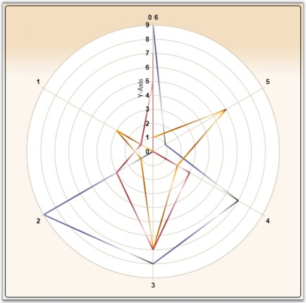
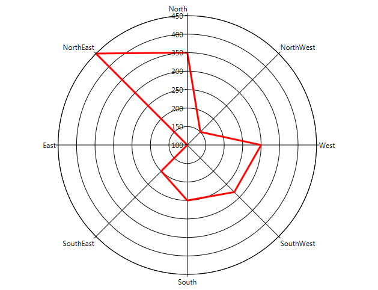
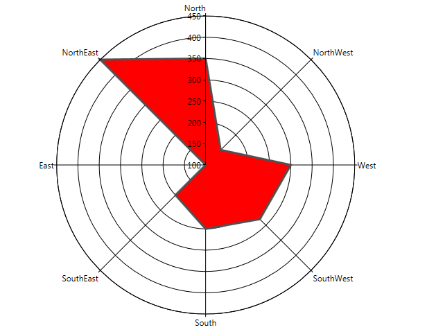
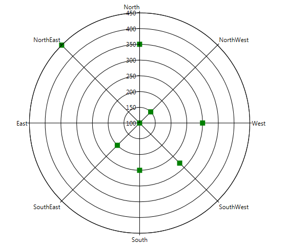
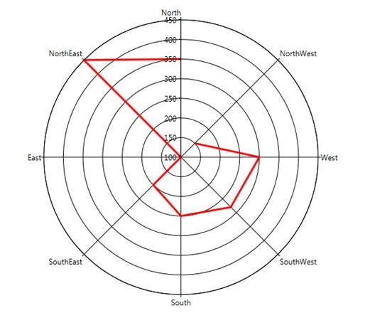
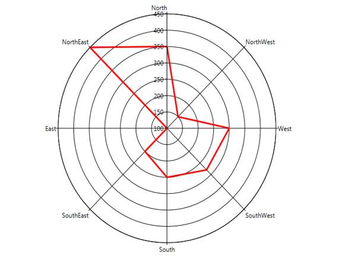

Essential Chart supports the implementation of Polar chart in the chart control. This chart is used to display different values and angles in the form of a graph.
A Polar Chart is a circular graph on which data is displayed in terms of values and angles. The X values define the angles at which the data points will be plotted. The Y value defines the distance of the data points from the center of the graph, with the center of the graph usually starting at 0.
It is a form of graph that allows a visual comparison between several quantitative or qualitative aspects of a situation and also allows a visual comparison between several situations that are drawn using the same axes (poles).

Figure 156: Polar Chart
Data Requirements
Table 118: Data Requirement
|
Details | |
|
Number of y values per point |
one |
|
Number of points |
one or more |
|
Number of series |
one or more |
Template
While setting template the following parameters can be used.
Table 119: Template Parameter
|
Name |
Type |
Description |
|
X1 |
double |
x-coordinate of first point |
|
Y1 |
double |
y-coordinate of first point |
|
X2 |
double |
x-coordinate of second point |
|
Y2 |
double |
y-coordinate of second point |
|
Interior |
Brush |
column color |
|
Series |
ChartSeries |
reference to series-owner |
A sample that illustrates Circular Chart Type is available in the following sample installation path.
..My Documents\Syncfusion\EssentialStudio\<Version Number>\WPF\Chart.WPF\Samples\3.5\WindowsSamples\Chart Gallery\Circular Chart Demo
See Also
This feature provides IsClosed and DrawType support for Radar and Polar chart types. The IsClosed feature specifies whether the series drawn should be in closed form. This can be applied to line-type series in polar and radar charts. The DrawType feature specifies in which form or shape the series should be drawn.
Below are the different DrawType categories for radar and polar charts:
Line
When the DrawType is Line, the series is drawn as a line segment connecting each point in the chart. The following image illustrates this.

Figure 157: DrawType = Line
Area
When the DrawType is Area, the series is drawn as a single area segment connecting each point in the chart. The following image illustrates this.

Figure 2: DrawType = Area
Symbol
When the DrawType is Symbol, the series is drawn as separate points as a symbol without connecting each point in the chart. The following image illustrates this.

Figure 3: DrawType = Symbol
Below are the screen shots of the chart when IsClosed is set to True and False:

Figure 4: IsClosed = False

Figure 5: IsClosed = True
Properties
|
Property |
Description |
Type |
Data Type |
|
IsClosed |
Used to specify how to draw the segment (closed or not closed). |
Attached |
Bool |
|
DrawType |
Used to specify what template is to be applied to series. |
Attached |
Enum (Line, Area, Symbol) |
|
PolarSymbol |
Used to assign symbol for polar charts and will be displayed when draw type is Symbol. |
Attached |
DataTemplate |
|
RadarSymbol |
Used to assign symbol for radar charts and will be displayed when the draw type is Symbol. |
Attached |
DataTemplate |
Adding Support for IsClosed and DrawType in Radar and Polar Charts to an Application
|
[XAML] Polar Chart <syncf:ChartArea syncf:ChartPolarType.IsClosed="True" syncf:ChartPolarType.PolarSymbol="{StaticResource sym}" syncf:ChartPolarType.DrawType="Line" Name="Area1"> <syncf:ChartSeries StrokeThickness="3" Interior="Red" Type="Polar" x:Name="Series1" Data="0,100,1,150,2,300,3,50,4,214,5,166" > </syncf:ChartSeries> </syncf:ChartArea>
Radar Chart <syncf:ChartArea syncf:ChartRadarType.IsClosed="True" syncf:ChartRadarType.PolarSymbol="{StaticResource sym}" syncf:ChartRadarType.DrawType="Line" Name="Area1"> <syncf:ChartSeries StrokeThickness="3" Interior="Red" Type="Radar" x:Name="Series1" Data="0,100,1,150,2,300,3,50,4,214,5,166" > </syncf:ChartSeries> </syncf:ChartArea>
|
|
[C#] Polar Chart ChartPolarType.SetPolarSymbol(Series1, this.Resources["sym"] as DataTemplate); ChartPolarType.SetDrawType(Area1, ChartPolarDrawType.Line); ChartPolarType.SetIsClosed(Area1, true);
Radar Chart ChartRadarType.SetRadarSymbol(Series1, this.Resources["sym"] as DataTemplate); ChartRadarType.SetDrawType(Area1, ChartRadarDrawType.Line); ChartRadarType.SetIsClosed(Area1, true);
|